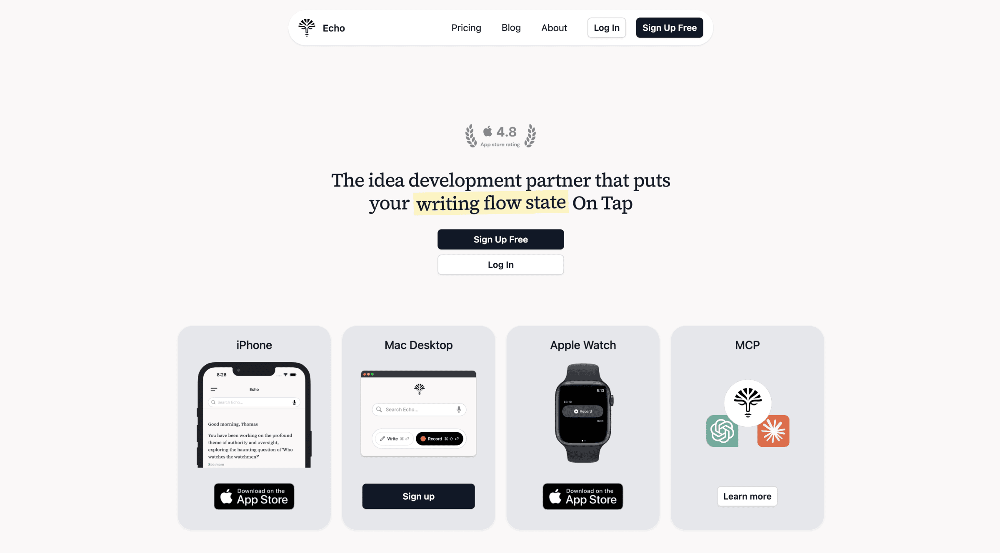
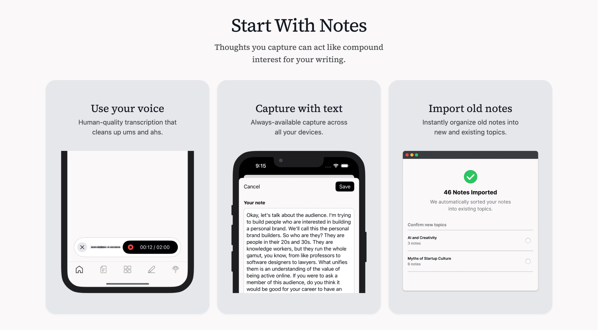
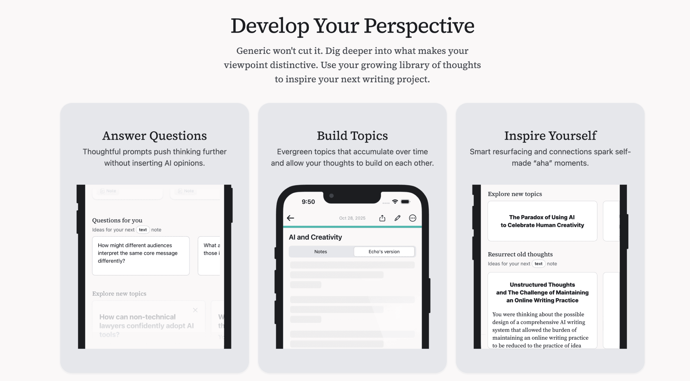
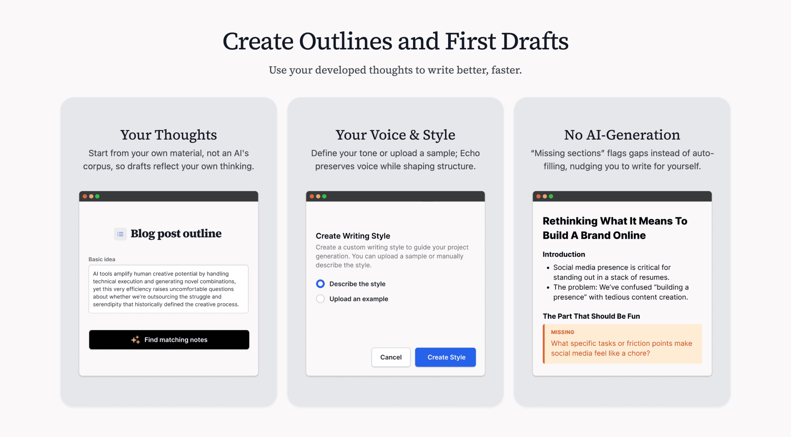
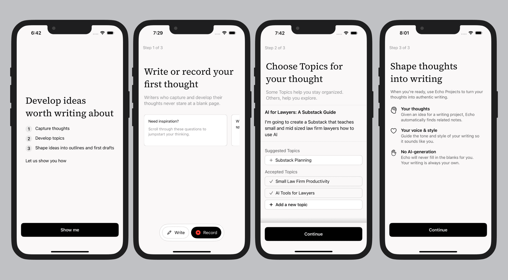
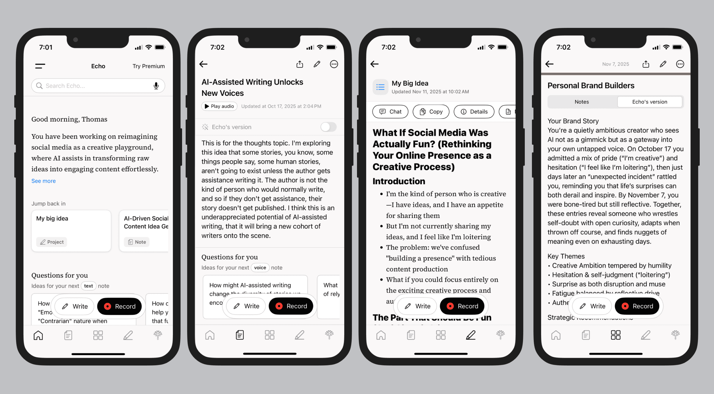
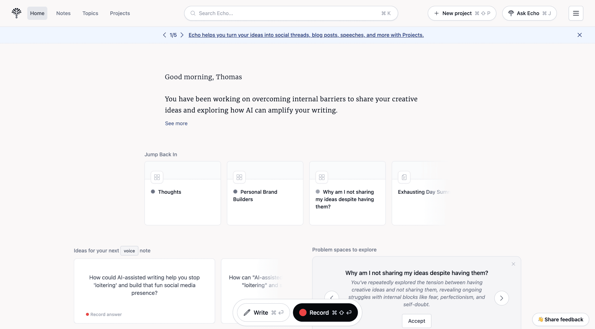
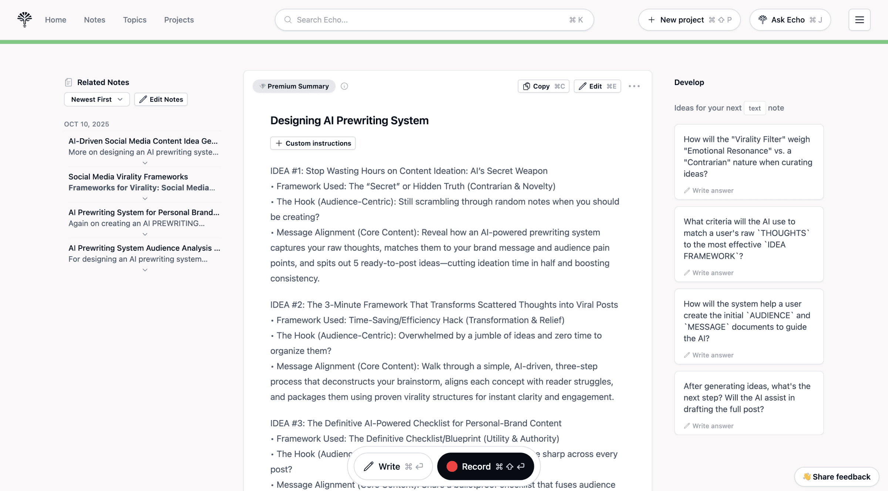

Echo
AI-native note-taking app for writers
Role
Team
Platforms
Overview
Echo is a note-taking tool for online writers to capture and develop their ideas. My cofounder and I pivoted into Echo after 5 months of tinkering with AI. We grew the team, shipped a multi-platform product, and built an audience of AI curious writers.
Shipped a multi-platform product across 6 platforms in under a year.

landing page 2025
Goals
Capture
The core of Echo is frictionless voice capture. One tap to record, automatic transcription, and AI-powered organization. Writers can capture a thought in seconds without breaking their flow.

voice capture
Develop
Raw voice notes become structured drafts through AI assistance. Echo doesn't just transcribe - it helps writers expand, organize, and refine their ideas into publishable content.

AI-assisted development
Write
The final step is turning developed ideas into finished pieces. Echo provides a distraction-free writing environment where writers can polish and export their work.

writing environment
Multi-platform
To meet users where they are, at the moment of inspiration, Echo had to be multi-platform. Echo can be found on iOS, Apple Watch, Mac, MCP, Web app, and Chrome Extension.

onboarding

iOS app

web dashboard

note details
Marketing
Marketing directly to consumers, I explored the depths of the idea that "first time founders focus on product, second time founders focus on marketing." I created content across TikTok, Instagram, YouTube, Substack, Medium, LinkedIn, and Reddit.
YouTube content